Automatically extract and sort apartment available for renting on https://rent.591.com.tw/ based on price, closest metro station and distance from the city center using Python.
The company https://pop-rooms.com/ asked me for a script that would extract daily apartment renting offers in Taipei from the 591 website. They needed to get price, distance from the closest MRT station and from the city center. In this tutorial, we will create such a script.
First thing that needs to be done is the website source code exploration to find out where is the relevant information. Since the company is interested only in flats with 5 rooms or more, let's go ahead and pick "5 rooms" in the options given on the webpage. Crossing this option leads to this URL.
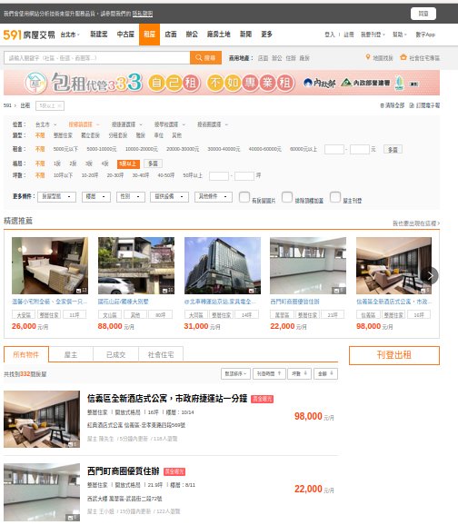
Click right on the website and select Inspect Element. Let's see the div name of each listed flat.
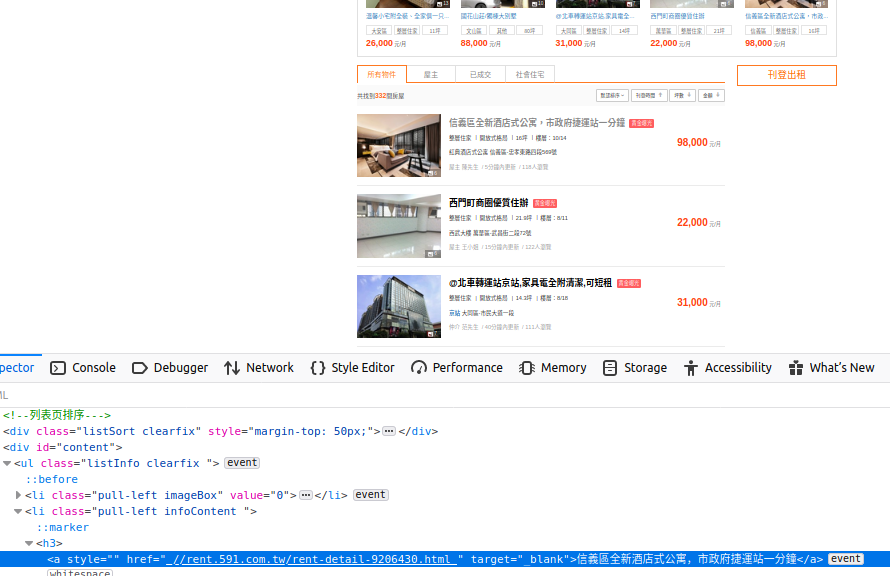
We need the URL in the div "content"/"h3"/"a href" as in the picture. Actually, all the "h3" divisions are the interesting ones including the URLs we need, thus no need to also make sure we are in "content". Let's just extract the "a href" within each "h3"
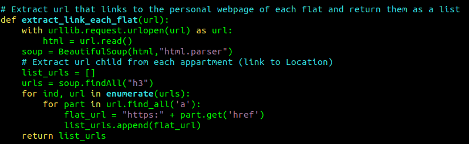
For this script to run, don't forget to import urllib.request, BeautifulSoup from bs4, asin, cos, sqrt, pi from math, re, time, date from datetime, numpy as np, and pandas as pd.
Alright, now we got the list of the URLs leading to information about each listed apartment. Let's explore one of the URLs.
The map appears at the bottom of the document, the price and information on the right side of the pictures. We also need the id of each flat to make sure the company could easily retrieve each apartment offer on the website. The ids are already on the urls. For example, for this first apartment, the url is https://rent.591.com.tw/rent-detail-9206430.html so we will use Python to extract 9206430.
Let's right click and inspect element on the map (at the bottom) and the price (on the right side). The map stands within the class "map_Box", in an "iframe" while the price stands into the class "priceclearfix". The GPS coordinates are unfortunately not displayed in the source html script. Hopefully, it contains another url leading to the Google map link which contains the latitude and longitude of the flat. Let's extract this URL which is in the div "map_Box"/"iframe"/"src".
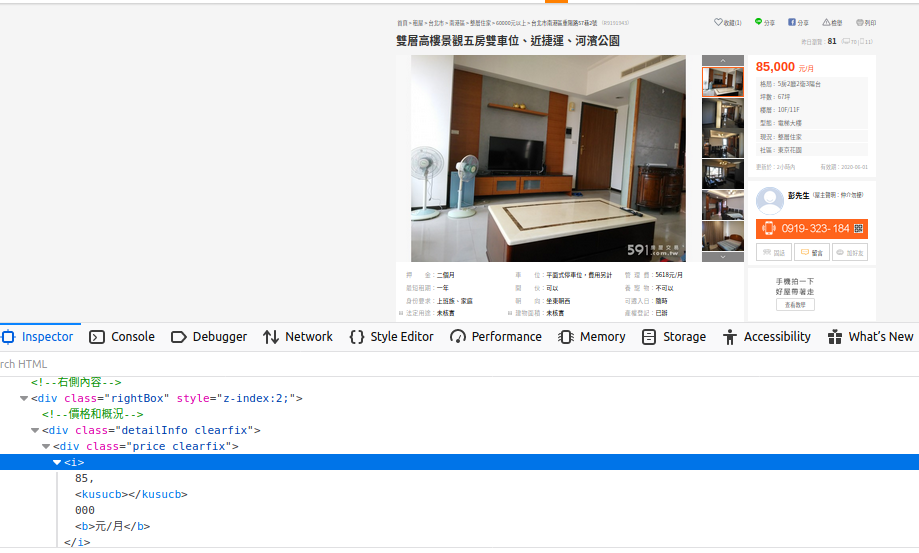
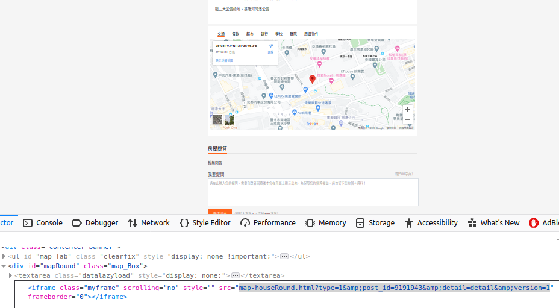
Let's write a function to extract and store this information for us.
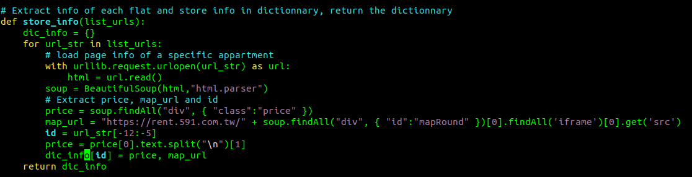
Note that the map urls written on the website are not complete. We need to add the website address at the beginning to find the real URL. This is what this line of code is doing:
map_url = "https://rent.591.com.tw/" + soup.findAll("div", { "id":"mapRound" })[0].findAll('iframe')[0].get('src')
Now that we got the map url of each flat, we can use it to extract the GPS coordinates. As we can see on the source html of the map web page, the latitude and longitude are written in the Google maps URL (here: 25.0555378 and 121.5961838). We can define a function to extract it.
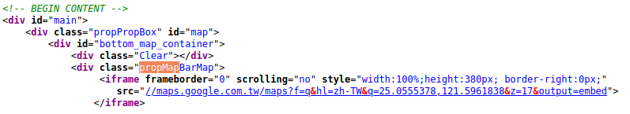

The "try" and "except" parts here are useful because sometimes, the Google maps link differs a little bit and the slicing is not good anymore because another letter or symbole was added into the url. Hopefully, the patterns are recurrent so a slicing is good enough. Note that the last "except" will print an error message to ease the debugging anyway.
Alright, now we got the GPS coordinates of each apartment. The company needs two metrics to rate the apartment: the distance from the city center as well as the distance from the closest MRT station. We thus need the GPS coordinates of each MRT station of Taipei. This can easily be done with Google maps. We just have to click on each MRT station and the coordinates will be displayed on the screen. We will save them in a txt file. We also need the coordinates of the city center. Using Google maps, I draw a circle around what I would call the city center and take the coordinates of the circle center as Taipei city center. I will consider that every coordinates within 5 km around the circle center is part of the city center.
Let's define the function to compute the distance between two GPS coordinates.
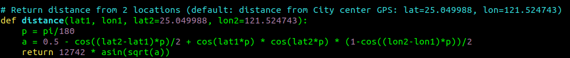
Note that I add the city center coordinates as default argument (lat2, lon2) so that I can also use the same function to compute both the distance from an input point and the city center, or the distance between 2 points chosen by the user.
Now we need to find the closest MRT station to the apartment. We will first define a function to extract the GPS coordinates of each MRT station from the txt document we created earlier and return them as a dictionnary with each MRT station name as key then the Chinese station name and the coordinates as values.
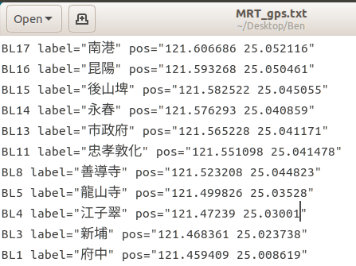
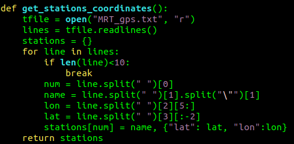
Now we can use this function and the previous one to actually compute the distance between a specific GPS location and each MRT station and thus find the closest one.
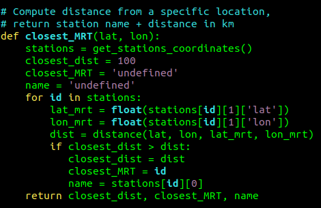
The next function is going to save the closest MRT station and distance from city center into the dictionnary so that, all information are stored at the same place

We need a metric to rate the apartment. The price itself is not always a good one. Let's compute a metric related to distances. The rate of the apartment should get higher if the flat is located within 5 km around the city center point and decrease proportionally as it goes further away. Also, the closest MRT should be at maximum 1 km from the apartment. Otherwise, the rate should again decrease proportionally as the distance increases. Finally, the rate should decrease more as we go far away from the city center than as we go far from the closest MRT station. Indeed, the company considers that it's better to be closer to the city center and far from an MRT station rather than the opposite.
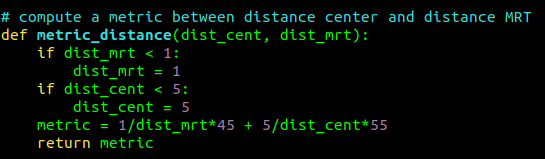
Our next function will compute the metric for each flat, store all the information we got into a dataframe so that we can eventually save it as an Excel document (user friendly). We will sort the value first by metric scores (all apartment with a metric of 100% will be at the beginning of the dataframe) and then by prices (the cheapest first). The reason why I don't compute a metric including both price & distance is that some owners put the price per room, some put the price per meter square, some per apartment. Therefore, the variability is quite huge and it is difficult to automatically define which type of price it is to make prices comparable.
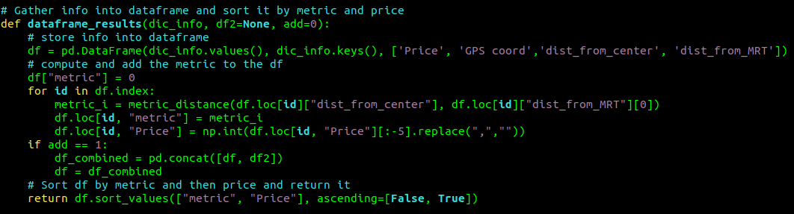
That's it, now we just have to run a "for loop" over each URL we want to extract information from, and enjoy the outputs
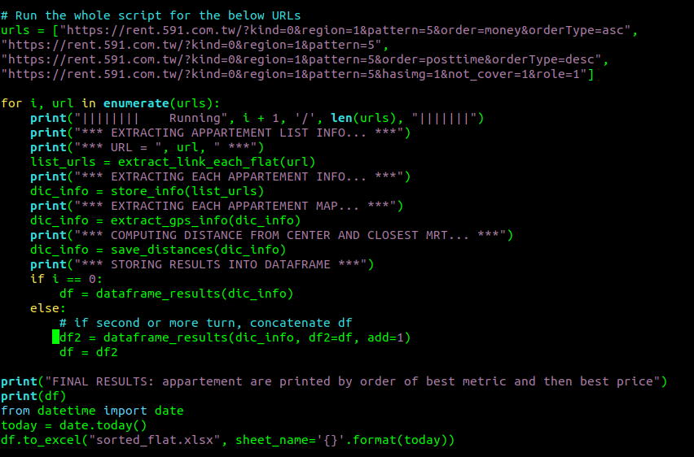
As you can see, we save it as an Excel document with the date of the day as sheet name so that the script can be ran each day.
Output:
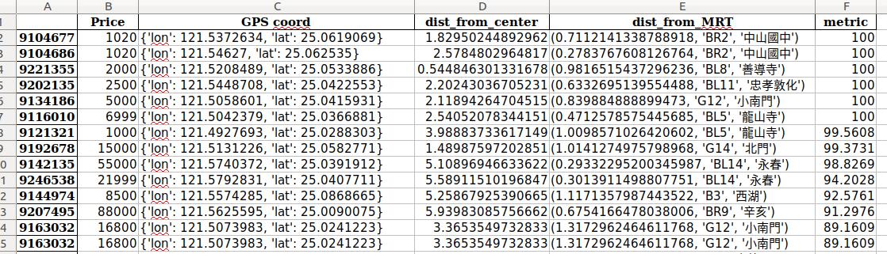